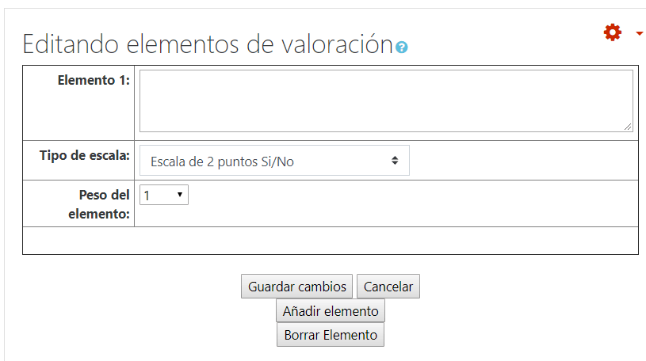

Student authors
Grant the activity’s mod/quest:addchallenge capability if learners should propose challenges. Student proposals wait for teacher approval.
Start with a course activity, choose who can author challenges, and decide whether answers use a rubric, Moodle question-bank grading, or both.
Turn editing on in your Moodle course, add Questournament, and enter its name, description, attachments and overall dates. Set answer limits, individual or team participation, scoring and the evaluation guides. The challenge-author guide and the answer rubric serve different purposes.

Grant the activity’s mod/quest:addchallenge capability if learners should propose challenges. Student proposals wait for teacher approval.
Allow students to add question bank challenges controls whether learners may compose from bank questions. If disabled, they can still propose plain open challenges when authorised. Teachers retain bank access.
Automatically export open challenges to question bank is separate and off by default. You can also require teacher validation of assessments made by challenge authors.
Write the title and description, add files if needed, set the dates and points, and use the challenge rubric to evaluate open answers.
Build a challenge from one or more Moodle question-bank questions. Mix automatically and manually graded types when the activity settings and permissions allow it.
Return to the same composer to change the title, dates, description, attachments, difficulty, question order or maximum marks. Save the challenge when done.
In New challenge, use Add question from question bank to select existing questions or Create question to make one. The composer renders each question below its controls. Drag rows to reorder them, remove unwanted questions, and set each question’s maximum mark. You can preview questions and, when authorised, edit them in the question bank before returning to the composer.

If all selected questions can be graded automatically, Moodle’s Question Engine evaluates the answer on submission. If any question needs human grading (for example an essay), the response stays pending until the challenge rubric is assessed. Marks earned on automatic questions are combined with the rubric percentage for manual questions, weighted by their maximum marks.
Set clear criteria in the rubric before answers arrive; teachers can later review manual assessments and feedback.

Teachers review student-authored challenges before approval. Check the question rendering, dates, attachments and evaluation guide. The list and cards flag Approval pending and Not evaluated independently, so both may need attention.
Use the Schedule challenges timeline to drag or resize challenge bars, or edit dates in the table. Save the changes to persist them. Scheduling checks existing answers so dates cannot be moved past submitted work; extending a challenge can expand the overall tournament window.

See how learners answer, how teachers review, and what each status means.